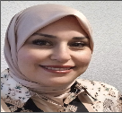
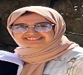
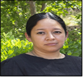
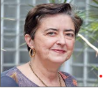
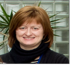

Dr. ZAROUR KenzaTitulaire d’un doctorat et d’un Magistère en Microbiologie Appliquée, est enseignante-
chercheuse expérimentée à l’Université Oran 1 Ahmed BenBella (Algérie), où elle est
responsable de Licence Microbiologie. Spécialisée dans l’étude des bactéries lactiques, la
production de dextrans et la caractérisation biochimique des métabolites microbiens d’intérêt
industriel, elle possède une solide expertise en microbiologie, biochimie, biologie
moléculaire, immunologie et rhéologie. Ses travaux ont contribué de manière significative à la
compréhension des polysaccharides microbiens, de leurs propriétés fonctionnelles et de leurs
applications potentielles dans l’industrie alimentaire et les procédés biotechnologiques.

Melle BOUACHERIA FarahTitulaire d’un diplôme Master II en Microbiologie Appliquée. Elle a réalisé son mémoire sur
la caractérisation de l’espèce Leuconostoc mesenteroides et son potentiel d’application
industrielle. Son travail a porté sur l’étude des propriétés biochimiques et fonctionnelles de
cette bactérie lactique, ainsi que sur son intérêt pour des procédés biotechnologiques et
alimentaires, démontrant sa capacité à contribuer à des applications industrielles innovantes.
Elle a participé à des projets internationaux sur la production de dextrane de la vitamine B 2 et
l’optimisation de matrices végétales pour la fabrication de pains et de boissons fermentées,
consolidant ainsi son expertise en microbiologie appliquée et biotechnologie.
Melle BOUFATAH Lylia Yamina
Titulaire d’un Master II en Microbiologie Appliquée, elle a consacré son mémoire à la
caractérisation de l’espèce Leuconostoc mesenteroides et à son potentiel d’application
industrielle. Ses travaux ont porté sur l’étude des propriétés biochimiques et fonctionnelles de
cette bactérie lactique, ainsi que sur son intérêt pour des procédés biotechnologiques et
alimentaires, mettant en évidence sa capacité à contribuer à des solutions industrielles
innovantes.

Dr. Annel M Hernanadez-AlcantaráChercheuse au Centre de Recherches Biologiques CIB-CSIC (Madrid, Espagne). Sa première
expérience en recherche a porté sur l’activité bactéricide de peptides antimicrobiens produits
par des bactéries lactiques à l’Université Nationale Autonome du Mexique. Lors de ses études
de Master et Doctorat à l’Université Métropolitaine Autonome, elle a étudié la croissance des
bactéries lactiques sur des sous-produits agro-industriels, leurs propriétés probiotiques et leur
résistance au stress. Au cours d’une bourse au CIB-CSIC, elle a acquis des compétences en
protéomique, caractérisation de polysaccharides et biologie moléculaire. Par la suite, elle a
contribué à des projets portant sur la production de dextrane et de riboflavine, ainsi qu’à
l’amélioration de matrices végétales destinées à la fabrication de pains et de boissons
fermentées, renforçant ainsi sa maîtrise de la microbiologie appliquée et des procédés
biotechnologiques.

Dr. Paloma López GarcíaDirectrice de Recherche au Centre de Recherches Biologiques CIB-CSIC (Madrid, Espagne),
elle a réalisé son doctorat en 1978 sur la transformation chromosomique chez Bacillus
subtilis, suivi d’un postdoctorat (19791984) sur la liaison et l’absorption de l’ADN chez B.
subtilis, avec des stages en Pologne et aux USA, où elle a développé des systèmes de clonage
plasmidique et étudié le transfert génétique chez Streptococcus pneumoniae. Depuis 1985,
elle occupe un poste permanent au CSIC, où ses travaux ont permis de caractériser l’ADN
polymérase I, la voie de l’acide folique et le système YycFG. En 1991, elle a créé le groupe
de Biologie Moléculaire des bactéries Gram-positives, développant des recherches sur les
bactéries lactiques bénéfiques, la fermentation du citrate, la production d’amines biogéniques
et l’étude des homopolysaccharides et dextranes à visée fonctionnelle et immunomodulatrice.
Elle a également mené des analyses protéomiques, caractérisé des mutants producteurs de
riboflavine, développé des aliments fonctionnels enrichis en dextrane et vitamine B 2 , et conçu
des vecteurs plasmidiques fluorescents pour l’étude des interactions bactéries-hôtes et de
l’expression génique, contribuant ainsi à la valorisation des bactéries lactiques dans l’industrie
alimentaire et biotechnologique.
Madrid, Espagne

Dr. Mari Luz MohedanoChercheuse au Centre de Recherches Biologiques CIB-CSIC (Madrid, Espagne). Ses travaux
de recherche portent sur l’étude moléculaire (ADN, ARN, protéines, exopolysaccharides) des
bactéries Gram-positives, pathogènes ou industrielles, visant à caractériser le transfert
génétique, la réplication et réparation de l’ADN, le quorum sensing et les voies métaboliques
d’intérêt biotechnologique. Sa thèse a étudié le rôle du système YycFG de Streptococcus,
pneumoniae dans l’expression de la biosynthèse des acides gras. Dans le domaine des
bactéries lactiques, elle a étudié la production d’amines biogènes, réalisé des analyses
protéomiques, caractérisé des bactéries lactiques productrices d’homopolysaccharides (HoPS)
et de vitamine B 2 , et montré leurs effets immunomodulateurs et antiviraux. Elle a également
développé des vecteurs plasmidiques fluorescents et conçu des aliments fonctionnels, comme
des pains sans gluten et boissons fermentées enrichis en riboflavine et HoPS.